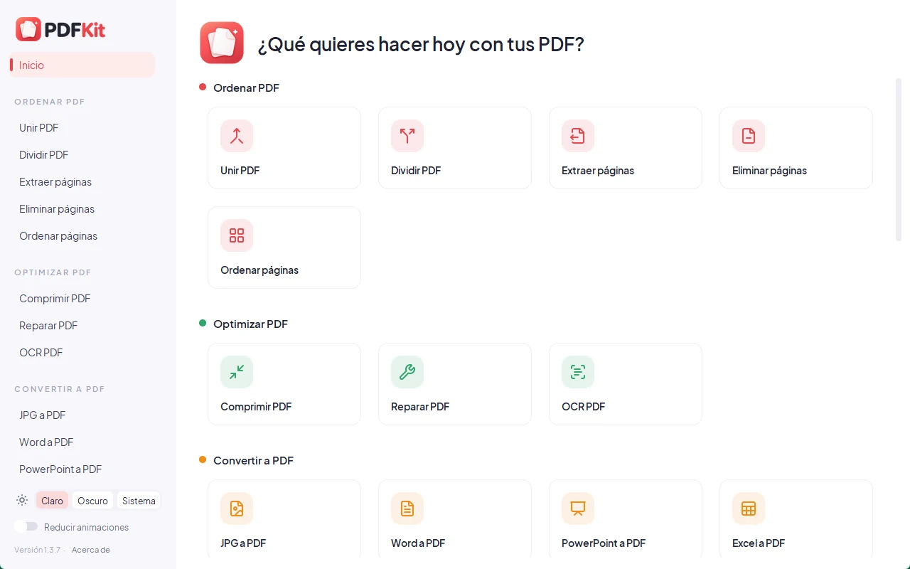
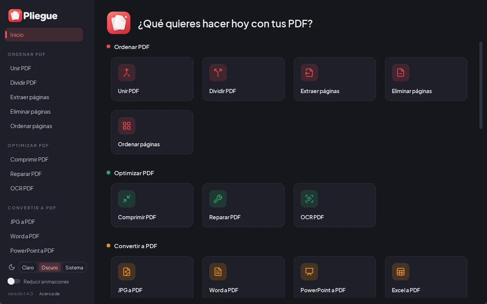
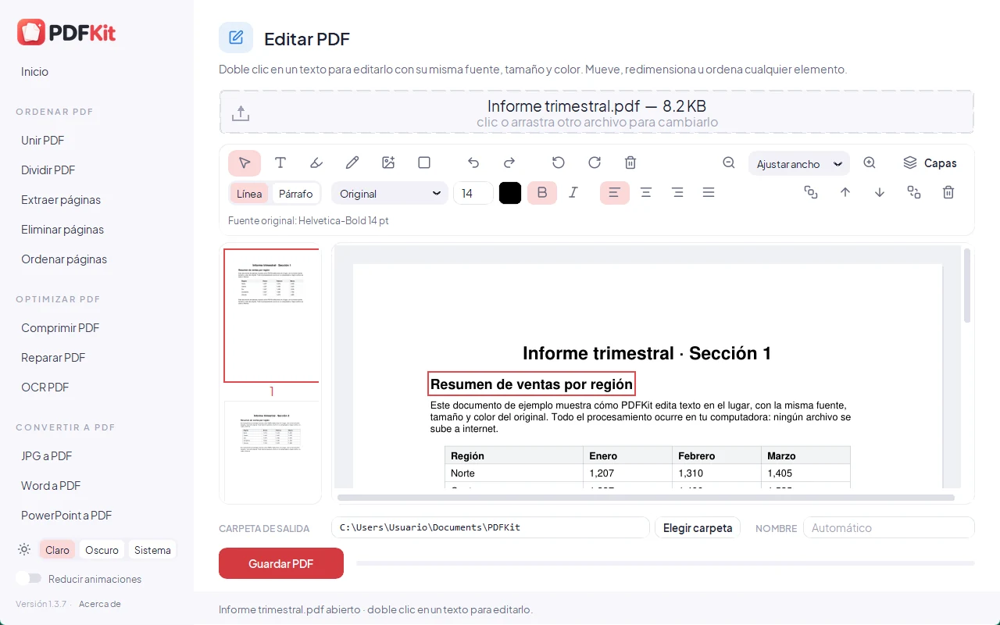
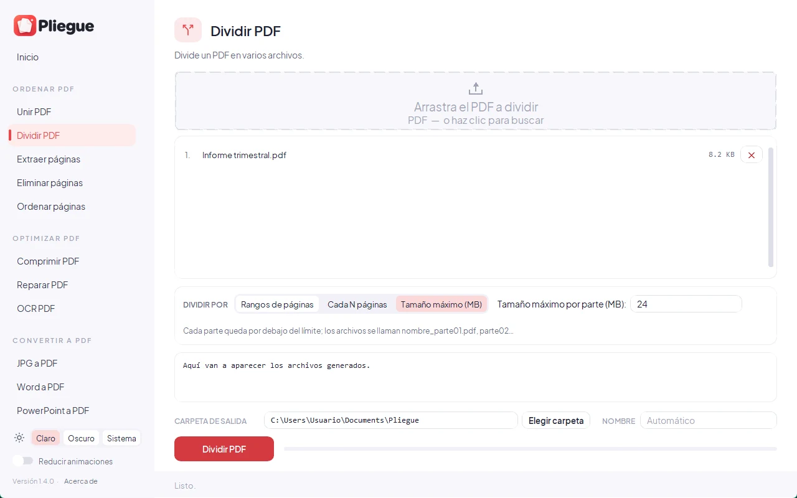

Todas tus herramientas PDF, sin internet
Une, divide, comprime, convierte, edita y firma tus PDFs en tu propia computadora. Rápido, privado y sin anuncios.
Descargar para WindowsCódigo abierto · Gratis · Sin anuncios

Así se ve



31 herramientas en una sola app
Las mismas categorías e iconos que verás en PDFKit.
Ordenar PDF
- Unir PDF
- Dividir PDF
- Extraer páginas
- Eliminar páginas
- Ordenar páginas
Optimizar PDF
- Comprimir PDF
- Reparar PDF
- OCR PDF
Convertir a PDF
- JPG a PDF
- Word a PDF
- PowerPoint a PDF
- Excel a PDF
- HTML a PDF
Convertir desde PDF
- PDF a JPG
- PDF a Word
- PDF a PowerPoint
- PDF a Excel
- PDF a PDF/A
Editar PDF
- Rotar PDF
- Números de página
- Marca de agua
- Recortar PDF
- Editar PDF
- Formularios PDF
Editar y firmar
- Firmar PDF
- Proteger PDF
- Desproteger PDF
- Censurar PDF
- Comparar PDF
Imágenes
- Convertir imágenes
- Comprimir imágenes
Tus archivos nunca salen de tu computadora
Todo el procesamiento ocurre en tu equipo. PDFKit no tiene telemetría, estadísticas ni anuncios, y no se conecta a internet. La única excepción es opcional: en «HTML a PDF» puedes escribir la dirección de una página web, y entonces se descarga esa página para convertirla.
- Funciona sin conexión
- Sin cuentas ni registros
- Sin rastreadores ni anuncios
- Código abierto: cualquiera puede revisarlo
Instalación
- Descarga PDFKit_Setup.exe con el botón de arriba.
- Ábrelo. Si Windows muestra «Windows protegió su PC», haz clic en Más información y luego en Ejecutar de todas formas.
- Sigue el asistente. PDFKit queda en el menú Inicio y en el Escritorio.
¿Por qué aparece ese aviso? El instalador no tiene una firma digital de pago (cuesta cientos de dólares al año), así que Windows no reconoce al autor. No significa que tenga virus: el código es público y puedes comprobar que el archivo es el original con su SHA-256.
SHA-256 del instalador: 83b68fc360127a7ad21232fd673d4e8fa9b67a69b4f0e9eb6c29d5e0a9e4d1ab
Windows protegió su PC
Microsoft Defender SmartScreen impidió el inicio de una aplicación no reconocida. Ejecutar esta aplicación puede poner su PC en riesgo.
Más información
Aplicación: PDFKit_Setup.exe
Editor: Editor desconocido
Preguntas frecuentes
¿Es gratis?
Sí, completamente gratis y sin anuncios. Es software libre con licencia AGPL-3.0.
¿Necesita internet?
No. Todas las herramientas funcionan sin conexión. Solo «HTML a PDF» usa internet si tú escribes la dirección de una página web.
¿En qué versiones de Windows funciona?
En Windows 10 y Windows 11 de 64 bits. Word, PowerPoint o LibreOffice son opcionales: mejoran «Word a PDF» y «PowerPoint a PDF».
¿Cómo lo desinstalo?
En Configuración → Aplicaciones → Aplicaciones instaladas, busca PDFKit y elige Desinstalar.
¿Dónde está el código fuente?
En GitHub: github.com/Blureckzhyto/pdfkit-desktop. Puedes revisarlo, compilarlo tú mismo y proponer mejoras.
¿Está en otros idiomas?
La aplicación está en español. Esta página también está en inglés.